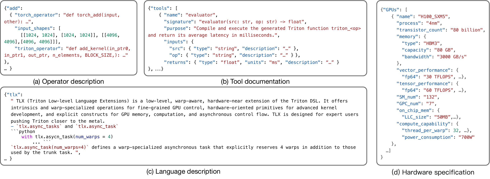
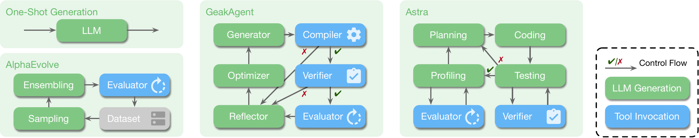
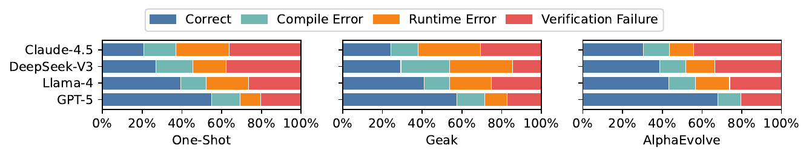
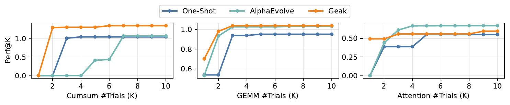

TritonGym
A Benchmark for Agentic LLM Workflows in Triton GPU Code Generation
TritonGym is a benchmark and orchestration framework for evaluating how well large language models can write performant Triton GPU kernels — not just one-shot, but inside multi-step agent loops with compilation, verification, and iterative refinement. The benchmark spans a maintained operator set, out-of-distribution tasks, and DSL extensions (Gluon & TLX), and standardizes tool access so workflow design and intrinsic model capability can be cleanly separated.
Official Leaderboard
Models are ranked by Pass@1 (correctness, max abs error ≤ 0.01 vs the PyTorch reference) and Perf@1 (oracle Triton latency / generated kernel latency, averaged over all operators with 0 for failures). Click a column header to sort. Toggle the split tabs to compare model behavior across the standard, OOD, DSL, and full benchmarks.
| # | Model | Agent | Pass@1 ▼ | Perf@1 |
|---|---|---|---|---|
| Loading… | ||||
Pass@1 over the full benchmark (164 operators) means correct outputs across all splits. Perf@1 > 1 means the generated kernel is faster than the hand-tuned Triton oracle. Numbers come from the published TritonGym evaluation.
Cost-Effectiveness
Total compute cost across the full TritonGym evaluation (all agents, all 164 operators). Cost / Pass is the dollars spent per correctly-solved operator — lower is better. Numbers from the paper.
| Model | Input | Output | Cost ($) | Pass@1 | Perf@1 | $/Pass | $/Perf |
|---|---|---|---|---|---|---|---|
| Qwen-3 | 3.20M | 8.80M | $24.08 | 40.1% | 0.404 | $60.1 | $59.6 |
| GPT-5 | 3.06M | 8.29M | $86.06 | 25.4% | 0.206 | $339.0 | $417.8 |
| Claude-4.5 | 3.53M | 8.40M | $135.13 | 36.7% | 0.326 | $368.0 | $414.5 |
Pass@1 here is a model-level aggregate across the three agents (One-shot, Geak, AlphaEvolve), so it does not match any single row in the main leaderboard above.
Dataset
The benchmark spans 164 operators across three splits:
- Standard — 139 common GPU kernels (matmul, attention, normalization, activations, quantization, …) with reference PyTorch implementations and oracle Triton kernels.
- OOD — 13 novel operators less likely to be in pre-training corpora.
- DSL — 12 operators specified in domain-specific languages (Gluon, TLX), evaluating the generalization of agents to new programming abstractions.
Each operator is evaluated on multiple input shapes; correctness uses a max-absolute-error threshold of 0.01 against the PyTorch reference, and performance is the latency ratio against the oracle Triton kernel.

Agentic Workflows
TritonGym standardizes tool access (compilation, verification, profiling) so workflow design can be evaluated independently of the underlying LLM. Four workflows ship out of the box:
One-shot
Single-pass generation from the operator spec — the lower bound on what an LLM can do without feedback.
Geak
Multi-agent pipeline with generator, compiler, verifier, optimizer, and reflector roles.
AlphaEvolve
Iterative refinement using evaluator feedback (up to 5 attempts). Currently the best workflow on the benchmark.
Leader
Diff-based iterative agent that proposes incremental code edits across rounds.

Where Models Fail


Paper
@inproceedings{tritongym2026,
title = {TritonGym: A Benchmark for Agentic LLM Workflows in Triton GPU Code Generation},
author = {Guan, Yue and Lin, Yichen and Zhao, Xu and Yao, Jianzhu and Qiang, Xinwei and Yu, Zhongkai and Viswanath, Pramod and Ding, Yufei and Aziz, Adnan},
booktitle = {International Conference on Learning Representations (ICLR)},
year = {2026},
note = {Under review}
}